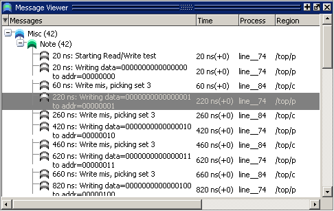

Message Viewer Window
To access:
and select a loaded WLF dataset for viewing
view msgviewer <dataset>.wlf command
Use this window to easily access, organize, and analyze any Note, Warning, Error or other elaboration and runtime messages written to the transcript during the simulation run.
Description
By default, the tool writes transcript messages during elaboration and runtime only to the transcript. To write messages to the WLF file (thus the Message Viewer window), use the ‑displaymsgmode and ‑msgmode options with the command to change the default behavior. By writing messages to the WLF file, the Message Viewer window is able to organize the messages for your analysis during the current simulation as well as during post simulation.
You can control what messages are available in the transcript, WLF file, or both with the following switches:
displaymsgmode messages — User generated messages resulting from calls to Verilog Display System Tasks and PLI/FLI print function calls. By default, these messages are written only to the transcript, which means you cannot access them through the Message Viewer window. In many cases, these user generated messages are intended to be output as a group of transcript messages, thus the default of transcript only. The Message Viewer treats each message individually, therefore you could lose the context of these grouped messages by modifying the view or sort order of the Message Viewer.
To change this default behavior you can use the -displaymsgmode argument with the vsim command. The syntax is:
vsim -displaymsgmode {both | tran | wlf}You can also use the displaymsgmode variable in the modelsim.ini file.
The message transcribing methods that are controlled by -displaymsgmode include:
Verilog Display System Tasks — $write, $display, $monitor, and $strobe. The following also apply if they are sent to STDOUT: $fwrite, $fdisplay, $fmonitor, and $fstrobe.
FLI Print Function Calls — mti_PrintFormatted and mti_PrintMessage.
PLI Print Function Calls — io_printf and vpi_printf.
SystemC Macros — SC_REPORT_INFO, SC_REPORT_WARNING, SC_REPORT_ERROR, and SC_REPORT_FATAL.
msgmode messages — All elaboration and runtime messages not part of the displaymsgmode messages. By default, these messages are written only to the transcript. To change this default behavior you can use the -msgmode argument with the vsim command. The syntax is:
vsim -msgmode {both | tran | wlf}To write messages to the WLF file and transcript, which provides access to the messages through the Message Viewer window, you can also use the msgmode variable (described in the User’s Manual) in the modelsim.ini file.
Figure 1. Message Viewer Window
The Messages Bar in the Wave window provides indicators as to when a message occurred.
Message Viewer Window Tasks
Figure 2 and Table 1 provide an overview of the Message Viewer and several tasks you can perform.
Icon |
Task |
Action |
|---|---|---|
1 |
Display a detailed description of the message. |
Right-click the message text then chooseView Verbose Message. |
1 |
Open message in Source window |
Double-click the message in the Message Column. |
1 |
Expand a hierarchical node |
Double-click a non-leaf node in the Messages column. |
2 |
Open the Configuration Options for Message Viewer dialog. Provides access to Analysis Questions, Column Layout, Filter Expression, Hierarchy Configuration and Sort Configuration. |
Left-click the down arrow to toggle the “drawer” open and closed. |
3 |
Open the source file and add a bookmark to the location of the object(s). |
Double-click the object name(s). |
3 |
Change the focus of the Structure and Objects windows. |
Double-click the hierarchical reference. |
4 |
Open the source file and set a marker at the line number. |
Double-click the file name. |
Objects
Column |
Description |
|---|---|
Assertion Expression |
Assertion expression associated with the message |
Assertion Filename |
Name of the file where the assertion failure message originated |
Assertion Line Number |
Line number within the filename where the message originated |
Assertion Name |
Name of the assertion associated with the message |
Assertion Start Time |
Start time of the assertion associated with the message |
Category |
Keyword for the various categories of messages:
|
Count |
Date the test was run (in UCDB format) |
File Info |
Filename related to the cause of the message, and in some cases the line number in parentheses |
Iteration/Delta |
Iteration (delta) in which the message occurs |
Message |
Organized tree-structure of the sorted messages, as well as, when expanded, the text of the messages |
Message ID |
Message ID |
Message ID Name |
Message ID name |
Objects |
Object(s) related to the message, if any |
Process |
Process or leaf associated with the message |
Region |
Hierarchical region related to the message, if any |
Severity |
Message severity, such as Warning, Note or Error |
Sim Time |
Total simulation time |
sim Timeunits |
Time unit used by the simulation |
Source File Name |
Name of the file where the message originated |
Source File Number |
Declaration number of the file associated with the message |
Source Line Number |
Line number within "filename" where the message originated |
Time |
Time of simulation when the message was issued |
Timing Check Kind |
Information about timing checks |
Verbosity |
Verbosity information from $messagelog system tasks. (Refer to $messagelog in the User’s Manual for more information.) |
VRM Context |
Username under which the test was run |
WLF Filename |
Name of WLF file from which message was imported |
WLF Raw Time |
Simulation time (in ticks) associated with the message |
WLF Time Unit |
Simulation time unit |
Popup Menu Item |
Description |
|---|---|
Reload Viewer Data |
Opens a Source window for the file, and in some cases takes you to the associated line number. |
View
|
Opens selected item: Verbose Message dialog box with details about message Source code at line number where message is Log file, in a Source window Object window, to view declarations Assertion window, to view assertions ATV, to view assertion threads Change environment Waveform window, opens: at time of selected message adds objects associated with selected message |
Analysis Questions |
Opens Analysis Questions dialog box; used for saving and managing specific queries of the data. |
Filter Expressions |
Opens Filter Expressions dialog; used for saving and managing filters. |
Hierarchy Configurations |
Opens Hierarchy Configurations dialog box; used for saving and managing particular hierarchy configurations of the data. |
Sort Configurations |
Opens Sort Configurations dialog box, which allows you save and manage sorting for your configurations. |
Column Layouts |
Opens Configure Column Layout dialog; used for creating, editing and managing the configuration of columns. |
Show Titles in Hier Column |
Toggles on and off showing the titles within the hierarchy column |
Global Options |
Configures how/when Message Viewer opens. |
Load/Save Setup File |
Loads/Saves a particular setup to a name you specify. |
Expand/Collapse Selected/All |
Manipulates the expansion of the Messages column. |
Usage Notes
Message Viewer Configuration of Data
The Message Viewer window contains a “drawer” of options for configuring the data, including analysis questions, column layouts, filter expressions, hierarchy of data, and sort configurations. The “drawer”, where all these settings can be set in one convenient location, is opened with a small toggle button at the bottom of the window.

Custom Hierarchy Configurations
To save your own custom column layout and any filter settings to an external file (<msgviewer>.do), choose while the window is active. You can reload these settings with the do command. This export does not retain changes to column width.